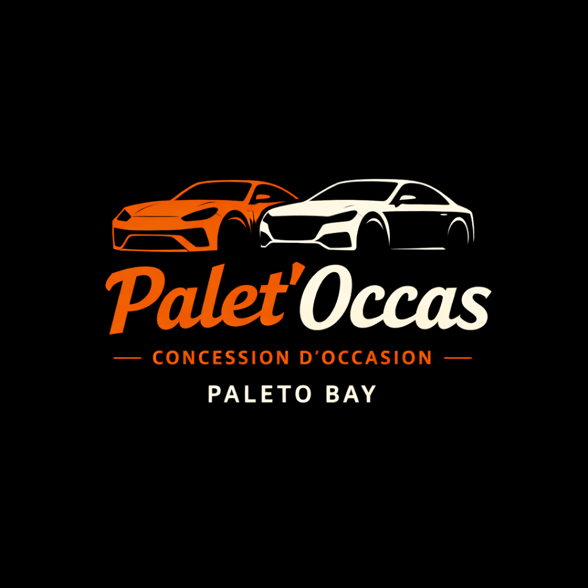

01
Accessibilité
Permettre aux nouveaux citoyens ainsi qu’aux travailleurs de la ville d’accéder à des véhicules à prix abordables.

Palet'OccasPaleto Bay • Concession d'occasion • Revente de véhicules
L’occasion nouvelle génération à Paleto Bay.
Histoire
Palet’Occas est une concession automobile spécialisée dans la vente de véhicules d’occasion, située à Paleto Bay. L’idée de cette entreprise est née d’un constat simple : de nombreux véhicules circulant dans la ville finissent saisis, abandonnés ou non réclamés, notamment après des interventions des autorités ou de l’IRS. Ces véhicules restent souvent immobilisés ou inutilisés pendant de longues périodes. Face à cette situation, le projet Palet’Occas a été imaginé afin de : redonner une seconde vie aux véhicules, proposer des prix accessibles aux citoyens, et dynamiser l’économie du nord de la ville. Avec l’accord du Syndicat de Paleto, l’entreprise souhaite devenir une référence de la vente de véhicules d’occasion dans la région, tout en respectant un cadre légal et administratif clair. Palet’Occas se veut une entreprise simple, efficace et utile pour la ville.
Buts
01
Permettre aux nouveaux citoyens ainsi qu’aux travailleurs de la ville d’accéder à des véhicules à prix abordables.
02
Remettre en circulation des véhicules saisis ou oubliés plutôt que de les laisser sans utilité.
03
Créer une activité économique dans le nord de la ville et attirer davantage de citoyens dans la région de Paleto.
Activités
Vente de véhicules provenant de différentes sources : Citoyens souhaitant vendre leur véhicule, Véhicules abandonnés, Véhicules saisis et non réclamés.
Rachat de véhicules aux citoyens souhaitant vendre rapidement.
Création des cartes grises et suivi des changements de propriétaire.
Réintégration dans le circuit civil de véhicules restés sans propriétaire.
Équipe
Gestion de l’entreprise, du stock, des relations administratives et de la vision globale.
Accueil clients, négociation, présentation des véhicules et suivi des ventes.
Réception des véhicules, préparation, organisation du parc et suivi opérationnel.
Objectifs
Ouverture officielle, mise en place du parc et premières ventes.
Développer le stock, affiner les procédures et renforcer les partenariats.
Faire de Palet'Occas une référence de l’occasion dans le nord de la ville.
Conclusion
Palet'Occas apporte une vraie cohérence économique et administrative à la revente de véhicules d’occasion, tout en créant du RP civil, commercial et local.
Revenir en hautEmplacement

Palet'Occas sera situé à Paleto Bay, dans la zone commerciale du nord de la ville. Cet emplacement offre un accès rapide aux habitants de la région ainsi qu’aux voyageurs circulant sur la Great Ocean Highway.
Cette implantation permettra de dynamiser l’activité économique locale tout en proposant un point de vente cohérent avec l’identité de l’entreprise.